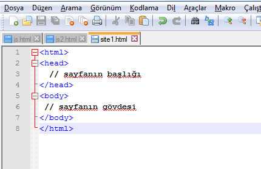
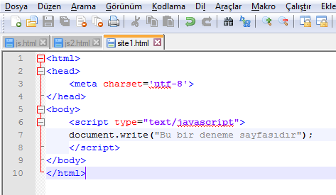

Javascript, Netscape firması tarafından geliştirilmiştir. İsminden dolayı java‘ya yakın gibi görünse de birbirlerine uzaktırlar. Javascript, programlama dilinden ziyade bir script dilidir.
Html sayfalarının içine yazılarak, sayfayı daha etkileşimli hale getirir. Örneğin click olayları, uyarı mesajları gibi hareketlerle sayfayı daha dinamik hale getirir. Javascript olmadan yazılan html sayfalarıyla yapılabilecekler sınırlıdır.
Javascript kodları etiketleri arasına yazılırlar. Html sayfası içinde ise
etiketinin arasına gömülürler. Yerine göre etiketinden sonra da yazılabilir.Kısa bir giriş bilgisinden sonra şimdi basit bir örnekle bitirelim.
1) İlk olarak temel html kodları üzerinden gidelim.
2) Şimdi javascript kodlarımızı nasıl kullanacağımız görelim. Biraz önceki düz html sayfasıydı.
